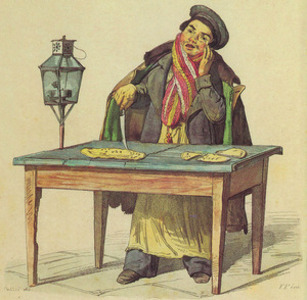
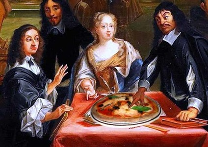
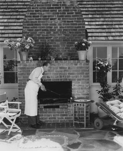

Acceuil
La pizza est née au XVIème siècle dans la ville de Naples en Italie. A cette époque on essayait d'améliorer le goût – un peu fade – des crêpes de pain, avec l'aide de gros sel et de gras de porc. Vraisemblablement c'était à l'origine le repas du pauvre: on garnissait de la pâte à pain, avant ou après sa cuisson, avec ce qu'on avait sous la main. La pizza actuelle, telle que nous l'aimons, est née à Naples. La légende veut que la reine Marguerite ait particulièrement apprécié la pizza garnie de tomates, de mozzarella et de basilic (rouge-blanc-vert, les couleurs du drapeau italien).
  Présentation
Notre famille, native de Naple se partage cette recette ancestrale de génération en génération depuis 2 millenaires.
Envis de partager une degustation unique, la Pizzeria "au fils du temps" vous fera traversez les époques avec se même goût ancestrale qui à ravie notre reine Marguerite.
Nos pizzas sont à emporter ou à deguster sur places sur nos deux terrasses équipées chacune d'un four exterrieur, et de son maitre pizzaiolo qui fera le spectacle.
Notre équipe saura à coup sûr emoustiller vos papilles et vous faire passer une merveilleuse soirée dans un cadre idilique.
Nos pizzas
Milanaise
Sauce 3 fromages, émincé de poulet, chorizo, mozzarella.
10€
Nantaise
Crème, pommes de terre, jambon cuit au torchon, lardons, mozzarella, curé nantais.
Normande
Crème de camembert au lait cru, jambon cuit au torchon, camembert, persillade, mozzarella.
Norvegienne
Crème, saumon fumé, citron, ciboulette, huile d’olive au citron.
Tartiflette
Crème de reblochon fermier, pommes de terre, lardons, oignons, reblochon, mozzarella.
Kilina
Tomate bio, tomates confites, jambon cru, roquette, crème balsamique, tomates cerise, copeaux de parmesan.
Gorgonzola
Tomate bio, mozzarella, poitrine fumée, sauce 3 fromages, gorgonzola
Bolognaise
Tomate bio, mozzarella, viande de bœuf cuisinée maison, oeuf, crème.
Calzone (Chausson)
Tomate bio, jambon cuit au torchon, champignons, œuf, mozzarella.
Barbecue
Tomate bio, mozzarella, poivrons, oignons rouges, viande de bœuf cuisinée maison, œuf, sauce barbecue.